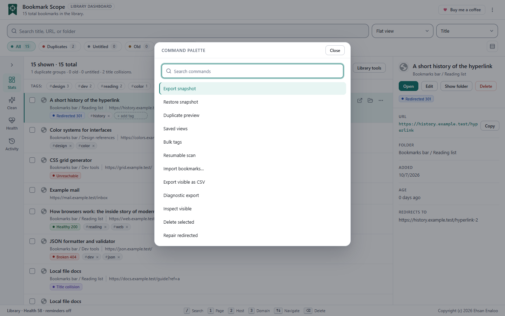

The command palette#
In the dashboard, press Ctrl+Shift+P (Cmd+Shift+P on Mac). A dialog titled Command palette opens with a Search commands box.

- Type to filter by name. Matching ignores case and looks anywhere in the command name.
- ↓ and ↑ move the highlight, and wrap around.
- Enter runs the highlighted command. Esc closes the palette without running anything.
- Tab stays inside the dialog. When it closes, focus returns to where you were.
- If another dialog is already open, the shortcut does nothing, so you cannot stack dialogs by accident.
The shortcut was chosen to avoid Ctrl+K, which browsers use for search.
The thirteen commands
Commands that change bookmarks keep their normal confirmations; the palette is only a faster way to reach them.
| Command | Library tools group | What it does |
|---|---|---|
| Saved views | Organize | Save, open or delete a smart view |
| Bulk tags | Organize | Add, remove, rename or merge tags with preview and undo. See Organizing |
| Duplicate preview | Organize | Choose survivors and merge duplicates. See Cleaning up |
| Delete selected | Organize | Delete the selected bookmarks (asks first) |
| Resumable scan | Check links | Start, pause, resume or cancel a saved link scan. See Link health |
| Inspect visible | Check links | Check the selected, or else all visible, bookmarks once |
| Repair redirected | Check links | Update redirected bookmarks to their final address (asks first) |
| Export snapshot | Backup and import | Download a snapshot file. See Backup and restore |
| Restore snapshot | Backup and import | Choose a snapshot file and restore it into a new folder |
| Import bookmarks… | Backup and import | Choose a file to import, with preview |
| Export visible as CSV | Backup and import | Download the visible bookmarks as a spreadsheet-safe CSV file. See Backup and restore |
| Diagnostic export | Troubleshoot | Preview and download a privacy-filtered diagnostic file. See Diagnostics |
| Clear cached health data | Troubleshoot | Forget cached link-health results (asks first) |
The same commands appear under the Library tools button, grouped as shown. The palette is the quickest route to them from the keyboard.
Keyboard shortcuts#
Dashboard
| Keys | Does this | Notes |
|---|---|---|
| Ctrl+Shift+P / Cmd+Shift+P | Open the command palette | Works even when a text box has focus; ignored while another dialog is open |
| / | Focus the search box | Only when you are not already typing in a field |
| Ctrl+A / Cmd+A | Select all bookmarks in the current view | Selects the whole filtered view, not only drawn rows |
| ↓ / ↑ | Move the active row down or up | The detail panel follows the active row |
| Enter | Open the active bookmark in a new tab | |
| E | Edit the active bookmark | Then Ctrl+Enter saves and Esc cancels |
| Space | Select or unselect the active row | |
| Delete / Backspace | Delete the selected bookmarks | Only if something is selected; asks to confirm |
| Esc | Back out one layer | See below |
| 1 2 3 | Page, Host, Domain scope | Only when the dashboard was opened from a right-click entry; see below |
The 1, 2 and 3 keys switch the dashboard between the page, host and domain scope of an address. They need an address to work from, which only a right-click entry (see the popup guide) provides. On a dashboard you opened normally they show This page is not supported with an empty list; reload the dashboard to get your whole library back.
When single-key shortcuts are paused
- While you are typing in the search box, a title field or a tag field. (The exceptions are Ctrl+Shift+P, Esc to cancel an edit, and Ctrl+Enter to save one.)
- While focus is on a button, link, checkbox, menu item or other control, so Space and Enter keep their normal meaning on it.
- While any dialog (confirm, Library tools, palette) is open.
Escape clears things one layer at a time
With the cursor outside any text box, each press of Esc undoes the innermost thing that is active. In order:
- Cancel editing a bookmark.
- Clear the search text.
- Clear the active filter chip.
- Clear the selection.
- Dismiss the toast (which also removes an Undo button you have not used).
Menus close on Esc first. Inside any dialog, Esc closes the dialog.
Tag field on a row
Enter or , adds the tag and Esc clears the field. See Organizing.
Popup#
The popup has no custom shortcuts. Esc closes its menu or dialog, and Tab moves between controls. Chrome lets you assign a shortcut to open the popup at chrome://extensions/shortcuts.
In the settings page#
Standard form behavior: Tab between fields, Enter in a field submits Save settings.
Accessibility notes#
- Dialogs have accessible names, trap Tab while open, close on Esc or a backdrop click, and return focus to the control that opened them.
- Each row checkbox is named with the bookmark’s title and address.
- Screen-reader behavior and contrast have not been formally audited. If you find a barrier, please report it.